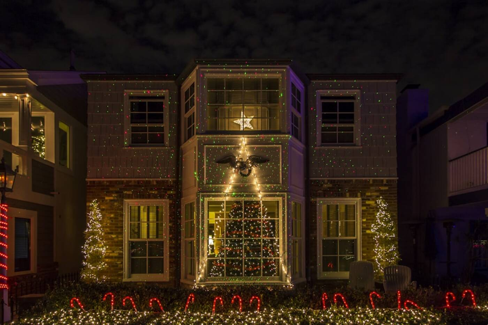
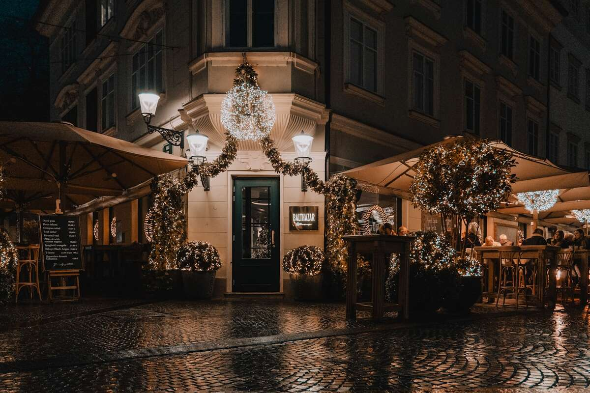
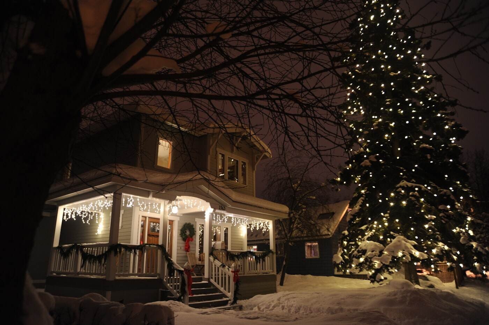
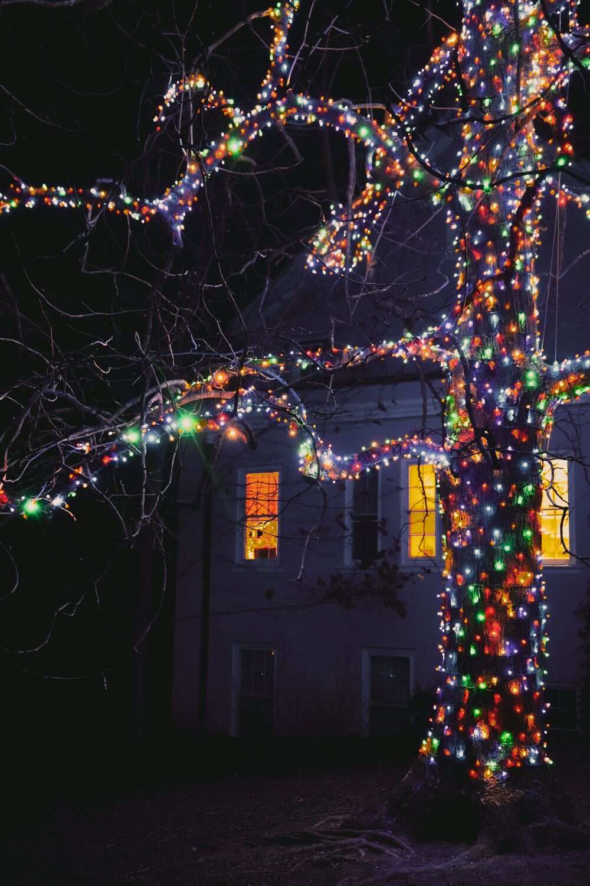
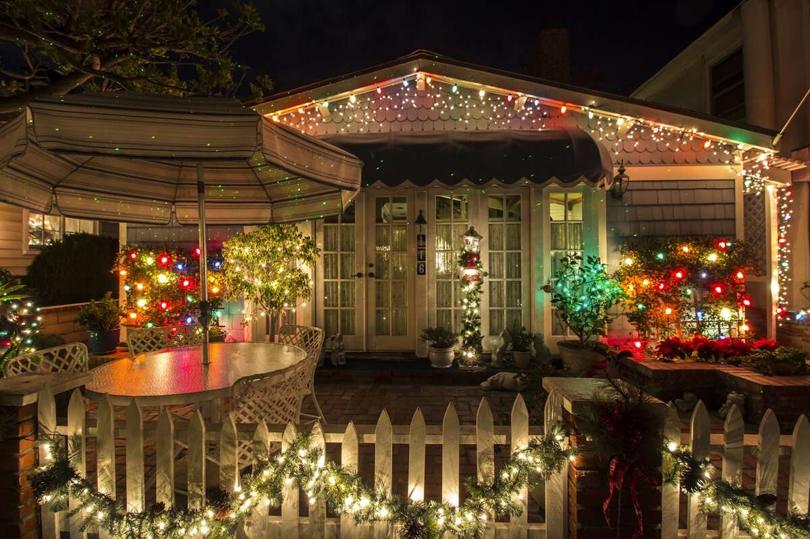

Every property needs a different approach. Here's what we cover and how each service works.
Rooflines, windows, doorways, trees, and shrubs, all professionally designed and installed with commercial-grade LED lights and no-damage clips. We handle the ladder work, the color planning, and the tangled-strand problem so your home looks fully lit without you spending a weekend on it.
Ignore it too long and you're either climbing a steep roofline yourself in December or settling for a half-lit house. Read more about our residential installation process, or call us today.

Storefronts, office buildings, restaurants, and property management groups need a display that photographs well, survives Charleston's weather, and comes down cleanly in January. We design layouts that work at the scale of a full building or shopping plaza, not a single-home roofline.
A dark, undecorated storefront during the holidays stands out for the wrong reason next to lit-up neighbors. See how our commercial installation process works, or call us today.

Once the season ends, we remove every strand, clip, and wreath, coil and label everything by section, and can store it for you until next year. No more finding a box of tangled lights in your garage in October, wondering which strands still work.
Left up too long, lights fade in the sun and clips can loosen or damage trim over time. Learn more about light takedown and storage, or call us today.

Warm white, multicolor, a single accent color to match your home, or a full custom palette — we design the layout around your home's architecture before anything goes up, and you approve it first. This is included with every installation, not an upsell.
A generic, one-size layout rarely fits a home's actual roofline and trim the way a designed plan does. Call us today for a custom Christmas light design in Charleston.

Bulbs fail, strands go dark, and storms happen. Every installation includes maintenance visits through New Year's Day, so if something goes dark mid-season, we come fix it at no extra charge instead of you noticing a gap every time you pull into the driveway.
Most DIY displays stay half-broken all season because nobody wants to get back on the ladder. Call us today for Christmas light maintenance in Charleston.
